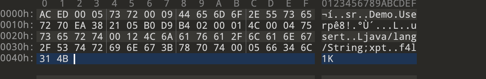
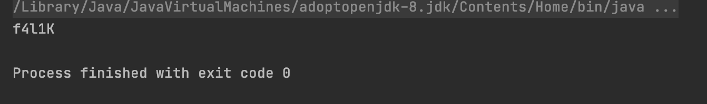
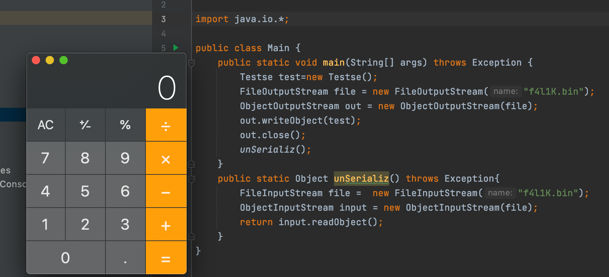
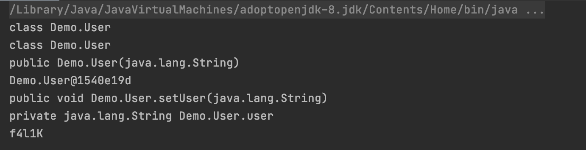

初探java反序列化
java序列化是指将对象转换为字节流的过程（ObjectOutStream中的writeObject()方法）
java反序列化就是将字节序列恢复为java对象的过程（ObjectInputStream重的readObject()方法）
序列化对象类必须实现java.io.Serializable接口，并且所有属性的都是可序列话的
序列化与反序列化
过程
package Demo;
import java.io.*;
class User implements Serializable {
private String user;
public void setUser(String name){
this.user=name;
}
public String getUser(){
return user;
}
}
User类继承了Serializable接口
序列化和反序列化函数
package Demo;
import java.io.*;
public class Main {
public static void main(String[] args) throws Exception {
User user = new User();
user.setUser("f4l1K");
FileOutputStream file = new FileOutputStream("f4liK.bin");
ObjectOutputStream out = new ObjectOutputStream(file);
out.writeObject(user);
out.close();
User user1 = (User) unSerializ();
System.out.println(user1.getUser());
}
public static Object unSerializ() throws Exception{
FileInputStream file = new FileInputStream("f4liK.bin");
ObjectInputStream input = new ObjectInputStream(file);
return input.readObject();
}
}
f4liK中就是我们序列化的

利用ObjectInputStream中read.Object即可读出序列化内容

readObject
当我们序列话对象的类重写了readObject()方法，我们再次反序列化时会调用重写的readObject()方法，我们用个例子说明
package Demo;
import java.io.Serializable;
public class Testse implements Serializable {
public String name="test";
public String getName(){
return name;
}
private void readObject(java.io.ObjectInputStream stream) throws Exception{
stream.defaultReadObject();
Runtime.getRuntime().exec("/System/Applications/Calculator.app/Contents/MacOS/Calculator");
}
}
我们重写的readObject中会调用计算器，我们序列化该类对象并反序列化
package Demo;
import java.io.*;
public class Main {
public static void main(String[] args) throws Exception {
Testse test=new Testse();
FileOutputStream file = new FileOutputStream("f4l1K.bin");
ObjectOutputStream out = new ObjectOutputStream(file);
out.writeObject(test);
out.close();
unSerializ();
}
public static Object unSerializ() throws Exception{
FileInputStream file = new FileInputStream("f4l1K.bin");
ObjectInputStream input = new ObjectInputStream(file);
return input.readObject();
}
}

所以readObject()如果书写不当。就可能会引起反序列化漏洞
但实际情况下不会如此，我们需要借助java的反射特性
java反射
Java反射机制是指在运行状态中，对于任意一个类，都能够知道这个类的所有属性和方法；对于任意一个对象，都能够调用它的任意一个方法和属性；这种动态获取的信息以及动态调用对象的方法的功能称为java语言的反射机制
Java 反射主要提供以下功能：
- 在运行时判断任意一个对象所属的类；
- 在运行时构造任意一个类的对象；
- 在运行时判断任意一个类所具有的成员变量和方法（通过反射甚至可以调用private方法）；
- 在运行时调用任意一个对象的方法
forName()-->获取类对象
getConstructor()-->获得该类中与参数类型匹配的公有构造方法
newInstance()-->创建构造方法的实例
getDeclaredMethod()-->返回所在类方法
Invoke()-->调用方法
getDeclaredField()-->获取类参数
setAccessible()-->如果参数为private需要设置为true
set()-->设置参数
package Demo;
import java.lang.reflect.Constructor;
import java.lang.reflect.Field;
import java.lang.reflect.Method;
public class Main {
public static void main(String[] args) throws Exception {
User user1 = new User("test"); //实例化User类
Class Userclass2 = user1.getClass();//获取实例对象的类
System.out.println(Userclass2);
Class Userclass= Class.forName("Demo.User");//获取类的对象
System.out.println(Userclass);
Constructor con = Userclass.getConstructor(String.class);//获取对象的构造方法
System.out.println(con);
User user = (User) con.newInstance("hkk");//新建一个user实例化对象
System.out.println(user);
Method method = Userclass.getDeclaredMethod("setUser",String.class);//获取类方法
System.out.println(method);
method.invoke(user,"hktest"); //使用user对象的setUser方法
Field field = Userclass.getDeclaredField("user");//获取user的参数
System.out.println(field);
field.setAccessible(true);//设置privite参数可访问
field.set(user,"f4l1K");//设置user参数
System.out.println(user.getUser());
}
}

利用反射链执行命令
package Demo;
import java.lang.reflect.Method;
public class Main {
public static void main(String[] args) throws Exception {
Class exec = Class.forName("java.lang.Runtime"); //获取类
Object method = exec.getDeclaredMethod("getRuntime").invoke(null);//获取类中getRuntime函数并调用该方法的实例
Object method1 = exec.getDeclaredMethod("exec",String.class).invoke(method,"/System/Applications/Calculator.app/Contents/MacOS/Calculator");//获取exec方法并在method实例中执行
}
}